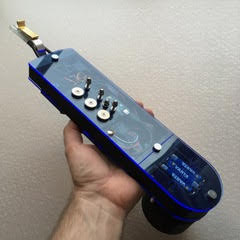

A New Sound
Portraits of Change is made possible because of MIDI technology. Musical Instrument Digital Interface, or MIDI, connects devices that make and control sound. Synthesizers, samplers, and computers all use MIDI to connect with one another. It connects the physical world of instruments with the virtual world.
MIDI is a technology that has stayed relatively the same since the 80’s. However, on January 18th, 2019, the MIDI Manufacturers Association (MMA) amd AMEI (the Japanese MIDI association) have finalized the core features and name for the next generation MIDI protocol: MIDI 2.0.
The MIDI 2.0 initiative updates MIDI with auto-configuration, new DAW/web integrations, extended resolution, increased expressiveness, and tighter timing- all while maintaining a high priority on backward compatibility. This major update of MIDI paves the way for a new generation of advanced interconnected MIDI devices, while still preserving interoperability with the millions of existing MIDI 1.0 devices. One of the core goals of the MIDI 2.0 initiative is to also enhance the MIDI 1.0 feature set whenever possible.
We are excited to see what is possible with this new technology, and hope to become a partner with MMA to start development on MIDI 2.0 within PoC.
All of our instruments will have some form of MIDI output. Whether or not we use the MIDI signal for actual sound, the signal will run through Unity where we can transition our sound signal into a visual one. Learn more here.
The Electronic Valve Instrument, or EVI, is a MIDI wind controller developed by Nyle Steiner. It is the lesser-known wind instrument, related to the EWI which was also developed by Steiner. This instrument has the same fingerings as the trumpet, along with the ability to change dynamics with an amazing range. We can use any virtual sound to come out of the stylings of a trumpet player!
While a rare instrument to find, the instrument manufacturer Berglund Instruments has been recently innovating the EVI and selling them as custom orders. There are currently no other EVI manufacturers.
While more popular and sold through manufacturer Akai, the EWI was originally custom made for Michael Brecker after having tried the EVI.
Michael Brecker performing on an EWI
Electronic drum sets that send MIDI signals have been around for a long time to emulate drumming without having to make a sound. We intend to use this instrument like no drum set ever sounded. Powered with Ableton, we are able to load any instrument, any drum sound, and trigger any change by using this powerful tool in the hands of a jazz drummer.